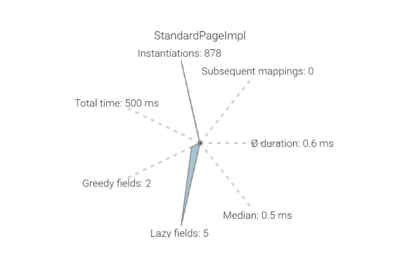

Resource models
POJOs annotated with @ResourceModel are Spring Beans representing specific resource types. Whenever a suitable resource is adapted to this model - or any of it's interfaces or super classes - the properties of the resource are automatically injected into the model. One can thus use the entire power of Spring and all features of Sling and the JCR - with just one annotation.
{% highlight java %} @ResourceModel(types = "sling/resource/type") public class MyModel { @Inject private SomeSpringBean collaborator; private String slingProperty; } {% endhighlight %}Spring MVC
All MVC features are supported - including first-class support for Sling specific request parameters such as the Resource resolver. For an in-depth documentation of the Spring MVC support, see the documentation on Spring MVC and Spring's MVC documentation.
{% highlight java %} @Controller public class MyController { @RequestMapping("/something") @ResponseBody public String handle(@RequestParam String param) { return "redirect:/success.html"; } {% endhighlight %}Keeping track of your models
The resource model registry allows exploring the registered models and their relation to the resource types to which they apply, as well as the types to which they can be adapted.

Realtime model insights
The resource model statistics console allows exploring the performance of resource models in real time, directly on the system.

Monitoring logfiles
To let engineering analyze issues quickly, NEBA includes a Sling web console extension that allows monitoring, tailing and downloading log files - including filtering and highlighting. Serial access to the machine running your instance is no longer required - authenticated access to the system does suffice.

Lazy loading
NEBA is used in environments with challenging performance requirements and designed to deliver fast - regardless of the amount of repository content. NEBA supports Lazy-Loading repository data - transparently and simple, out of the box.
